Note
此份說明文件描述的是該外掛的舊版本（4.70.10 之前）。您可以在 此頁面 找到最新的說明文件。
PayPal Commerce
PayPal Commerce 為您的買家提供了更簡化且安全的結帳體驗。PayPal 會自動智慧地呈現最合適的付款類型給您的顧客，讓他們能更輕鬆地使用 Pay with Venmo、PayPal Credit、信用卡付款、iDEAL、Bancontact、Sofort 以及其他付款方式來完成購物。
設定付款方式
若要設定 PayPal Commerce 外掛，請前往 設定 → 付款方式。接著在付款方式列表中找到 PayPal Commerce 付款方式：
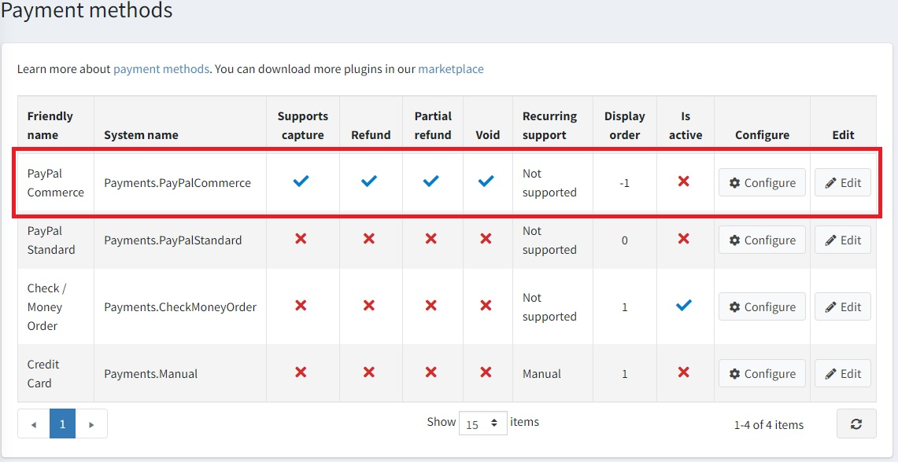
請依照下列步驟來設定 PayPal Commerce：
1. 啟用付款方式
若要執行此操作，請在付款方式列表頁面中，點擊該外掛所在列的 Edit 按鈕。勾選 Is active 核取方塊來啟用此外掛。接著點擊 Update 按鈕，您的變更將會被儲存。
2. 建立 PayPal 帳號
如果您已經擁有 PayPal 帳號，請直接前往 下一節。如果您還沒有帳號，請註冊一個商業帳號。您可以透過兩種方式完成：在 PayPal 官網註冊，或直接從外掛設定頁面註冊。我們簡單說明這兩種方式：
在 PayPal 官網註冊帳號
在 PayPal 網站註冊一個商業帳號。只需點擊該頁面的 Sign up 按鈕即可：
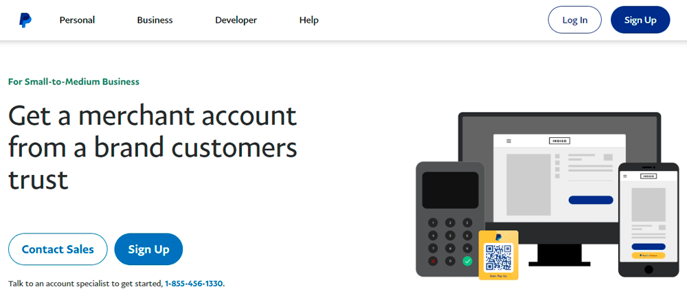
接著填寫您個人及企業的相關資訊：
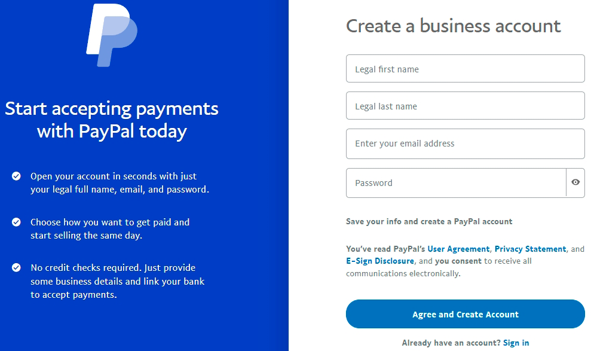
Note
如果您已經擁有帳號，系統將會引導您進入授權頁面。
從外掛設定頁面註冊帳號
在管理後台開啟 PayPal Commerce 設定頁面。您會看到如下表單：
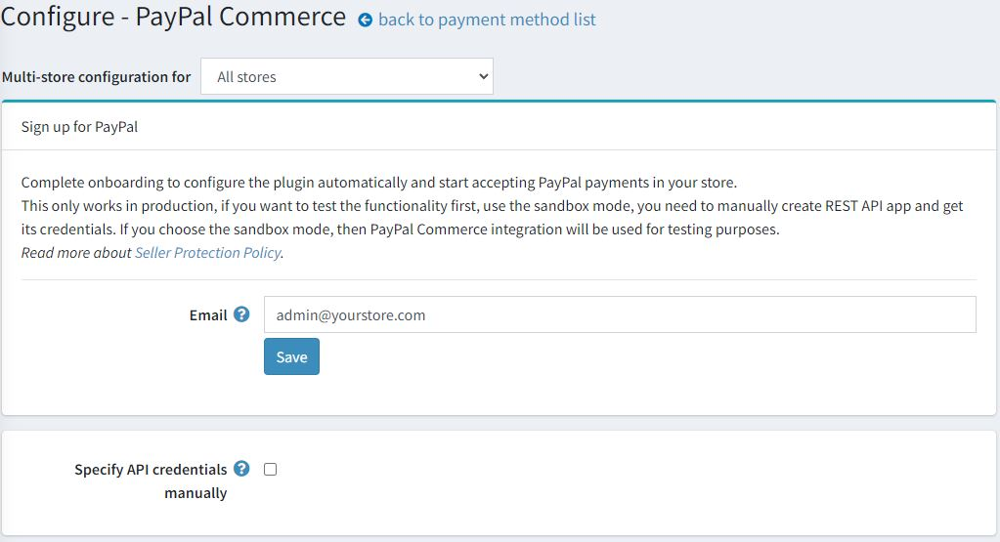
輸入您的電子郵件地址，並點擊 Save 按鈕讓 PayPal 進行檢查。
若一切順利，您會看到如下的綠色通知，以及一個新增的 Sign up for PayPal 按鈕：
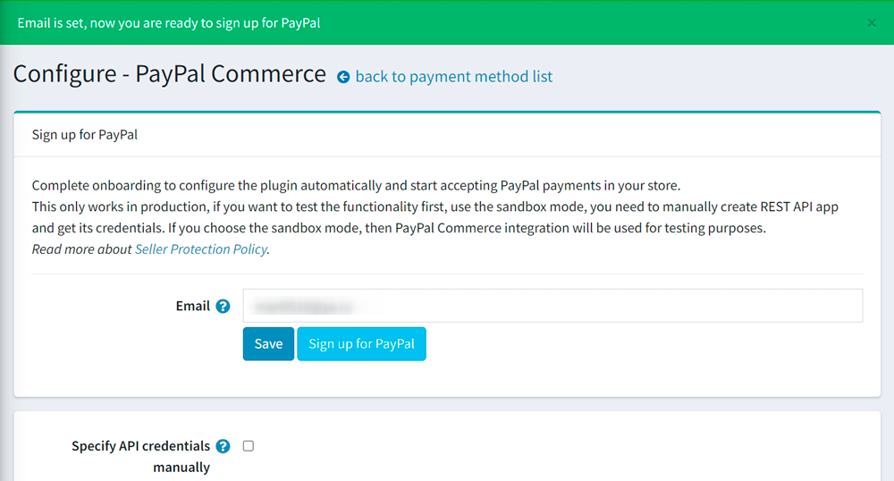
點擊此按鈕後，您會看到一個彈出視窗，讓您填寫資料並註冊帳號：

您需要依照步驟填寫所有必要資料。最後一個步驟會要求您確認電子郵件以啟用您的帳號。
3. 設定 Paypal 開發者儀表板
使用您的 PayPal 帳號憑證登入 開發者儀表板。
在 My Apps & Credentials 中，使用切換開關在正式環境（live）與沙盒測試（sandbox）應用程式之間切換。
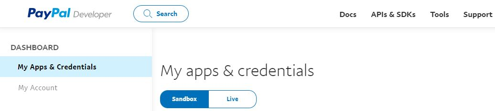
前往 REST API apps 區段並點擊 Create App。
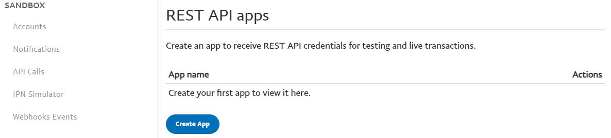
輸入應用程式名稱並點擊 Create App。應用程式詳細資訊頁面將會開啟，並顯示您的憑證。
複製並儲存您應用程式的 Client ID 與 Secret。
檢查您的應用程式詳細資訊，若有任何變更，請務必儲存應用程式。
4. 在 nopCommerce 中設定付款方式
在 設定 → 付款方式 頁面中找到 PayPal Commerce 付款方式，並點擊 設定。隨後會顯示 設定 - PayPal Commerce 頁面，如下所示：

在 設定 - PayPal Commerce 頁面上定義下列設定：
手動指定 API 憑證 (Specify API credentials manually) - 決定您是否需要手動設定憑證。如果您已經建立應用程式，或者想要使用沙盒模式 (sandbox mode)，請選擇此選項。否則，外掛將會自動進行設定，您在完成 PayPal 註冊後，即可在您的商店中開始接受 PayPal 付款。
使用沙盒 (Use sandbox) - 如果您想要先測試此付款方式，請勾選此項。
輸入您在前幾個步驟中儲存的 Client ID。
輸入您在前幾個步驟中儲存的 Secret。
選擇 付款類型 (Payment type)，可選擇立即請款，或在訂單建立後授權訂單款項。
接著前往 PayPal Prominently 面板：
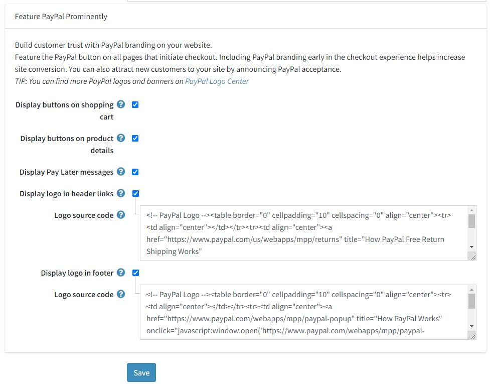
在此面板上，定義顯示設定：
勾選 在購物車顯示按鈕 (Display buttons on shopping cart) 核取方塊，可在購物車頁面上顯示 PayPal 按鈕，以取代預設的結帳按鈕。
勾選 在商品詳細資訊顯示按鈕 (Display buttons on product details)，可在商品詳細資訊頁面上顯示 PayPal 按鈕；點擊這些按鈕的行為與預設的「加入購物車」按鈕相同。
勾選 顯示「稍後付款」訊息 (Display Pay Later messages) 核取方塊，以善用您網站上的「稍後付款」訊息功能。該訊息會顯示在商品頁面與結帳頁面上，顯示顧客分四期付款的金額。
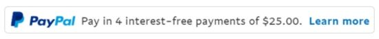
勾選 在頁首連結顯示標誌 (Display logo in header links) 核取方塊，可在頁首連結中顯示 PayPal 標誌。這些標誌與橫幅是讓買家知道您選擇使用 PayPal 安全處理付款的絕佳方式。
- 若勾選上述核取方塊，系統會顯示 標誌原始碼 (Logo source code) 欄位。在此欄位中輸入標誌的原始碼。您可以在 PayPal Logo Center 找到更多標誌與橫幅。您也可以修改程式碼，使其能妥善契合您的佈景主題與網站風格。
勾選 在頁尾顯示標誌 (Display logo in footer) 核取方塊，可在頁尾顯示 PayPal 標誌。這些標誌與橫幅是讓買家知道您選擇使用 PayPal 安全處理付款的絕佳方式。
- 若勾選上述核取方塊，系統會顯示 標誌原始碼 (Logo source code) 欄位。在此欄位中輸入標誌的原始碼。您可以在 PayPal Logo Center 找到更多標誌與橫幅。您也可以修改程式碼，使其能妥善契合您的佈景主題與網站風格。
點擊 儲存 (Save) 以儲存外掛設定。
限制商店與顧客角色
您可以將任何付款方式限制在特定的商店與顧客角色。這代表該方式將僅對特定的商店或顧客角色開放。您可以從 外掛列表 頁面進行此設定。
前往 設定 → 本地外掛。找到您想要限制的外掛。以我們的案例來說，是 PayPal Commerce。若要更快找到它，請使用頁面上方的 搜尋 面板，並透過 付款方式 選項依 外掛名稱 或 群組 進行搜尋。
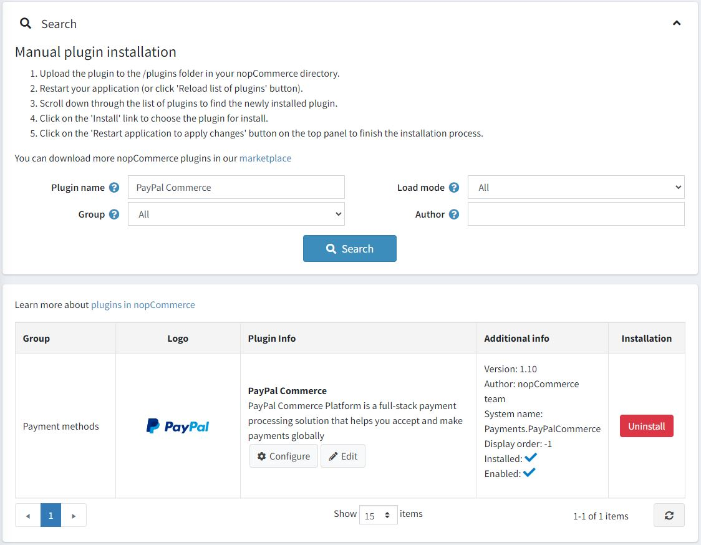
點擊 編輯 按鈕，編輯外掛詳情 視窗將顯示如下：
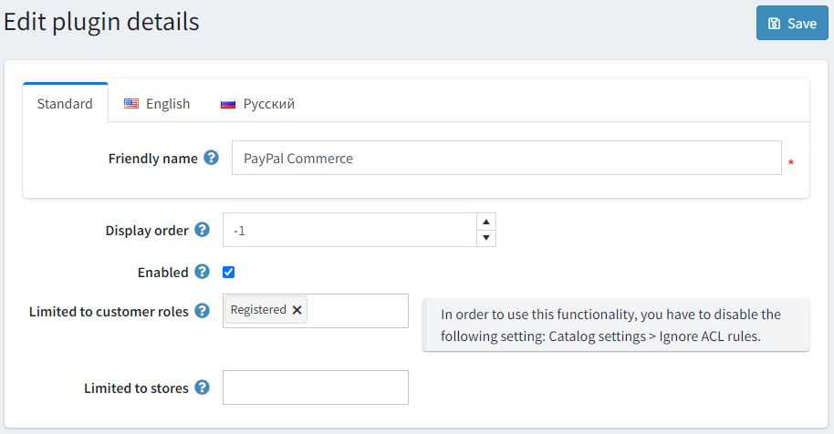
您可以設定以下限制：
在 限制顧客角色 欄位中，選擇一個或多個顧客角色（例如：管理員、供應商、訪客），這些角色將能夠使用此外掛。如果您不需要此選項，只需將此欄位留空即可。
Important
若要使用此功能，您必須停用下列設定：目錄設定 → 忽略 ACL 規則 (全站)。閱讀更多關於存取控制列表的資訊 here。
使用 限制商店 選項將此外掛限制在特定商店。如果您有多個商店，請從列表中選擇一個或多個。如果您不需要此選項，只需將此欄位留空即可。
Important
若要使用此功能，您必須停用下列設定：目錄設定 → 忽略「各商店限制」規則 (全站)。閱讀更多關於多商店功能的資訊 here。
點擊 儲存。